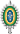
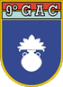
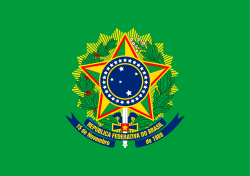

| Cargo | Órgao | Período | Partido | Votos | Títulos |
|---|---|---|---|---|---|
|

Capitão do Exército Brasileiro |
21º GAC 9.º GAC 8º GAC Paraquedista | 1973–1988 | - | - | Medalha do Pacificador com Palma (por "Ato de Bravura" em 1978) |

Vereador |
Cãmara Municipal do Rio de Janeiro | 1.º de janeiro de 1989 a 1.º de fevereiro de 1991 | Partido Democrata Cristão (PDC) | - | - |
|
Deputado Federal pelo Rio de Janeiro |
Câmara dos Deputados do Brasil | 1.º de fevereiro de 1991 a 1.º de janeiro de 2019 | PP - 1991 e 1993 PPR - 1993 a 1995 PPB - 1995 a 2003 PTB - 2003 e 2004 PFL - 2004 a 2005 PP - 2005 PSC - 2016 e 2018 |
- | - |
|

Presidente da República |
38.º Presidente do Brasil | 1.º de janeiro de 2019 a 31 de dezembro de 2022 | Partido Social Liberal (PSL) - 2018 a 2019 Partido Liberal (PL) - 2021 | 57 milhões de votos | Ordem do Mérito Militar Cidadão Honorário do Paraná |